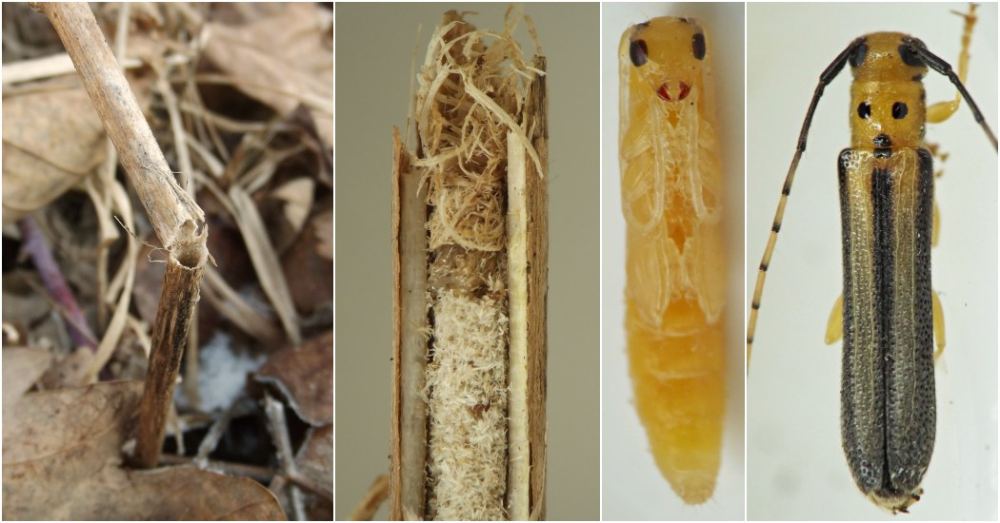

Stem borer (Coleoptera: Cerambycidae) in Ageratina
| Record no.: | 0019 |
|---|---|
| Feeding guild: | Stem borer |
| Taxonomy: | Coleoptera: Cerambycidae: Oberea tripunctata |
| Stages observed: | trace, pupa, adult |
| Distribution observed: | IA |
| Hosts in Ageratina: | A. altissima (white snakeroot) |
The larva of this borer, upon finishing its tunneling in the stem of the host, makes a cut around the inner circumference of the lower stem, causing the stem above this point to break off. The larva, still inside the remaining stem stump, then seals the open end of the stump with shavings and frass. Pupation is in a chamber in the stem stump below the plugged end. Chapman (2018) identified the adult I reared.
See also: Ageratina stem insects compilation

 Prev
Prev
{kind=link}
- Chapman, E. 2018. Comment on contributor post at BugGuide.net. Retrieved July 2, 2024 from https://bugguide.net/node/view/1559958.[return to in-text citation]
Page created: February 9, 2026. Last update: none